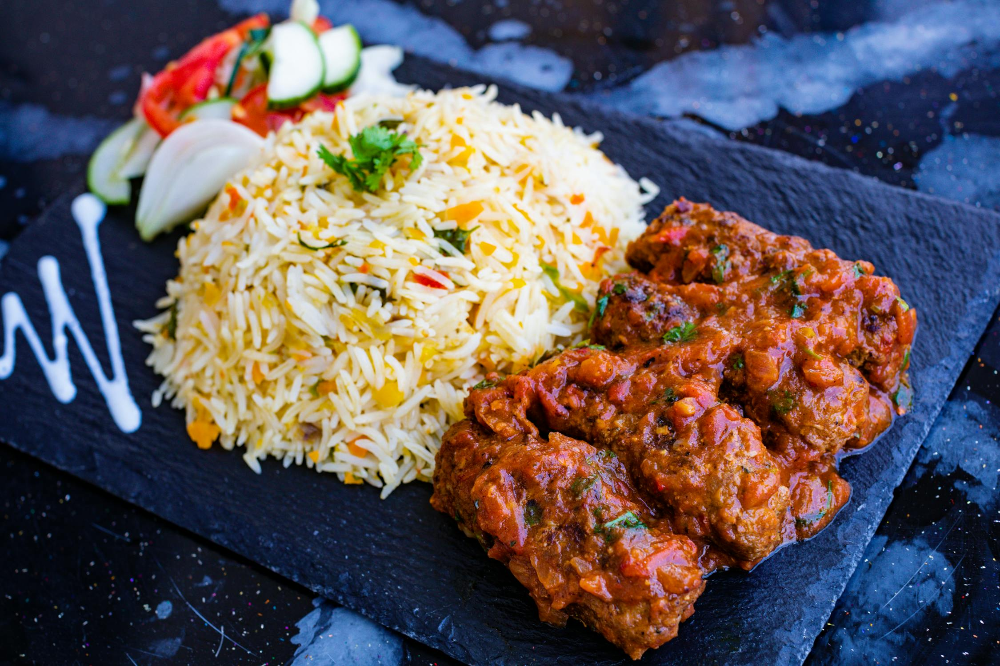
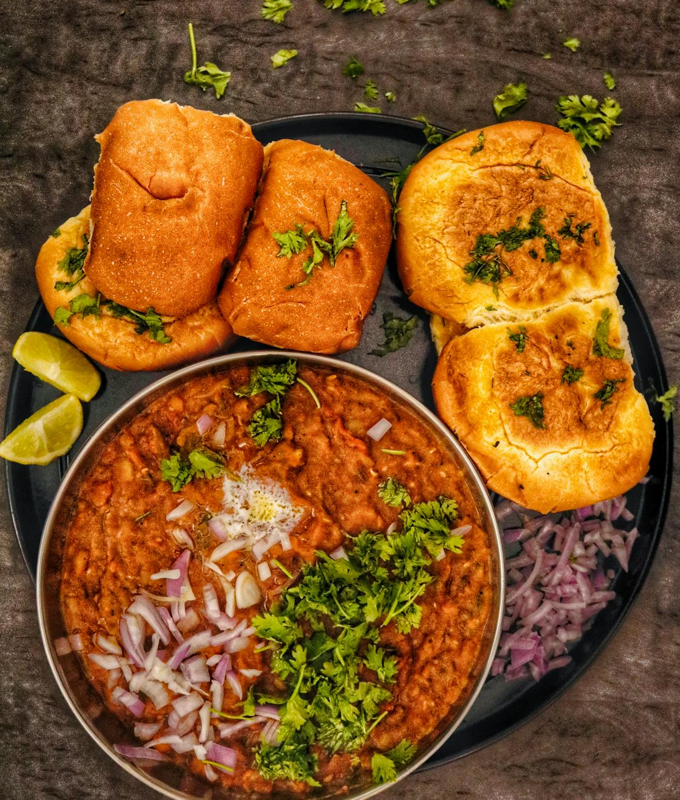
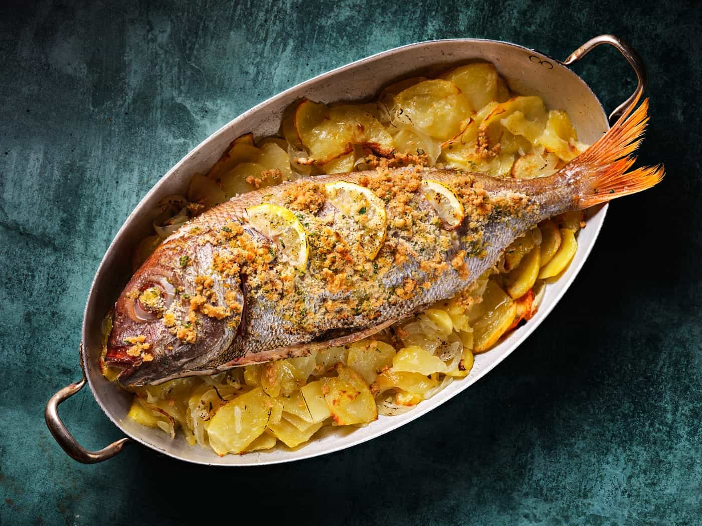

Sabor y tradición desde 1950
La auténtica cocina madrileña, como la de antes. Platos que cuentan historias y sabores que perduran.
Ver Nuestro MenúNuestras Especialidades

Cocido Madrileño
Nuestro famoso cocido a tres vuelcos, servido como manda la tradición.

Callos a la Madrileña
Una receta familiar que ha pasado de generación en generación. ¡Pura potencia!

Besugo a la Madrileña
Fresco y horneado con maestría, un clásico de las celebraciones.
Nuestra Historia
Fundado en 1950 por la familia García, "El Antojo" ha sido un punto de encuentro para los amantes de la buena mesa en el corazón de Madrid. Mantenemos vivas las recetas de la abuela, cocinando a fuego lento y con los mejores ingredientes de la región. Más que un restaurante, somos una casa de comidas donde cada cliente es parte de la familia.